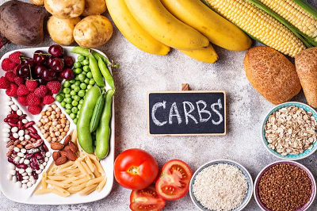

What are the 6 essential nutrients?
- Vitamins
- boosting the immune system
- strengthening teeth and bones
- aiding calcium absorption
- maintaining healthy skin
- vitamin A
- vitamin D
- vitamin E
- vitamin K
- vitamin B-1
- vitamin B-2
- vitamin B-3
- vitamin C
- fruits
- vegetables
- meats
- Minerals
- magnesium
- calcium
- phosphorus
- sulfur
- balance water levels
- maintain healthy skin, hair, and nails
- improve bone health
- vegetables
- leafy greens
- fortified bread and cereals
- Protein
- ensuring the growth and development of muscles, bones, hair, and skin
- forming antibodies, hormones, and other essential substances
- serving as a fuel source for cells and tissues when needed
- red meats
- fish and other seafood
- eggs
- dairy products
- some grains, including quinoa
- Fats
- cell growth
- blood clotting
- building new cells
- muscle movement
- brain functioning
- nuts
- fish, such as salmon and tuna
- vegetable oils
- seeds
- Carbohydrates 
- the immune system
- brain function
- the nervous system
- energy to perform tasks
- quinoa
- brown rice
- vegetables
- oatmeal
- Water
- flushing toxins out
- shock absorption
- transporting nutrients
- preventing constipation
- lubrication
- hydration
Vitamins are micronutrients that offer a range of health benefits, including:
there are essential vitamins that nutritionists divide into two groups: fat soluble and water soluble.
Fat soluble vitamins are:
Water soluble vitamins are:
Food that contain alot of vitamins:
Minerals are the second type of micronutrients. There are two groups of minerals: major and trace minerals. The body needs a balance of minerals from both groups for optimal health.
Major minerals are:
they help the body in:
A person can ensure they consume enough minerals by including the following foods in their diet.
Protein is a macronutrient that every cell in the body needs to function properly
A person can take in proteins through their diet. The following foods are good sources of protein:

People often associate high fat foods with bad health. However, a person needs certain fats to help maintain optimal health.
Fats provide the body with energy and help it carry out a range of functions. However, it is essential to consume healthful fats, such as monounsaturated and polyunsaturated fats and limit or avoid saturated and trans fats.
Healthful fats help with the following functions:
According to recent Dietary Guidelines for AmericansTrusted Source, a person should consume 20–35% of their calories from healthful fats.
A person can find healthful fats in several foods, including:
Carbohydrates are essential to the body. They are sugars or starches that provide energy for all the cells and tissuesTrusted Source in the body.
There are two different types of carbohydrates: simple and complex. People should limit their intake of simple carbohydrates, such as white bread, pasta, and rice. However, the body needs complex carbohydrates to support the following:
The Dietary Guidelines for AmericansTrusted Source recommend a person consumes 45–65% of their daily calories from complex carbohydrates.
The following foods contain complex carbohydrates:
Water is probably the most important essential nutrient that a person needs. A person can only survive a few days without consuming water. Even slight dehydration can cause headaches and impaired physical and mental functioning.
The human body is made up of mostly water, and every cell requires water to function. Water helps with several functions, including:
The best source for water is to drink natural, unsweetened water from the tap or bottled sources. For people who do not like the taste of plain water, they can add a squeeze of lemon or other citrus fruits.